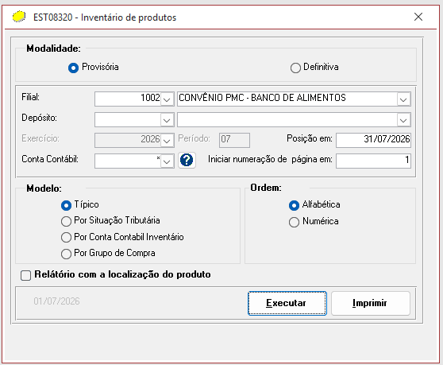
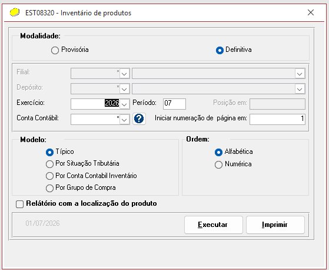
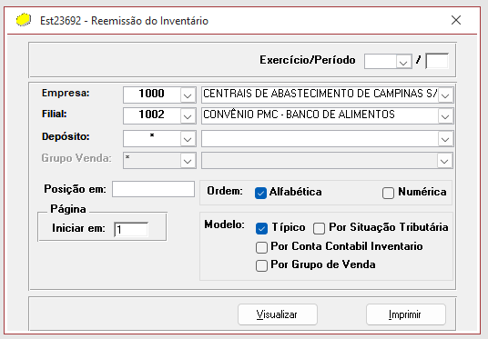

Desprezar o PDF da 1002 Salvar os PDFs da 1000 e 1001 na pasta C:\Users\gabriel.moraes\OneDrive - CENTRAIS DE ABASTECIMENTO DE CAMPINAS SA\Contabilidade\Inventário OBS: preciso anotar aqui se o PDFs que salva é o primeiro ou o segundo que abre! OBS 2: não sei se eu tenho que salvar esse Excel também junto com os PDFs acima! (acho que na verdade eu tenho que pegar o relatório excel na remissão do inventário conforme descrito abaixo) Agora vamos gerar o definitivo: Marcar a Modalidade como "Definitiva" Selecionar o exercício Clicar em executar
Feito tudo isso, precisa colocar a planilha de estoque e a planilha do razão depois de feito o ajuste da diferença no lote de fechamento Para colocar no Excel, pegar o relatório em Relatório -> Remissão de inventário -> Período , Empresa , Filial
Finalizada essa parte, é preciso ir no lotes fazer as transferências entre filiais Filial 1001 Contabilidade – filial 1001 – Relatórios – razão – filial 1001 – data mês todo – conta 9 (primeira conta) – Executar – Visualizar – valor total de crédito Home – Transações – dig. De lote – último dia do mês – binóculo – abrir – procurar (valor em débito) – copiar valor em crédito – mudar documento (mês) – fechar Conferir se zerou: Contabilidade – filial 1001 – Relatórios – razão – filial 1001 – data mês todo – conta 9 (primeira conta) – Executar – Visualizar – valor total de crédito Filial 1000 Contabilidade – filial 1000 – Relatórios – razão – filial 1000 – data mês todo – conta 9 (primeira conta) – Executar – Visualizar – valor total de crédito Home – Transações – dig. De lote – último dia do mês – binóculo – abrir – procurar (valor em débito 1001) – copiar valor em crédito 1001 – mudar documento (mês) – fechar